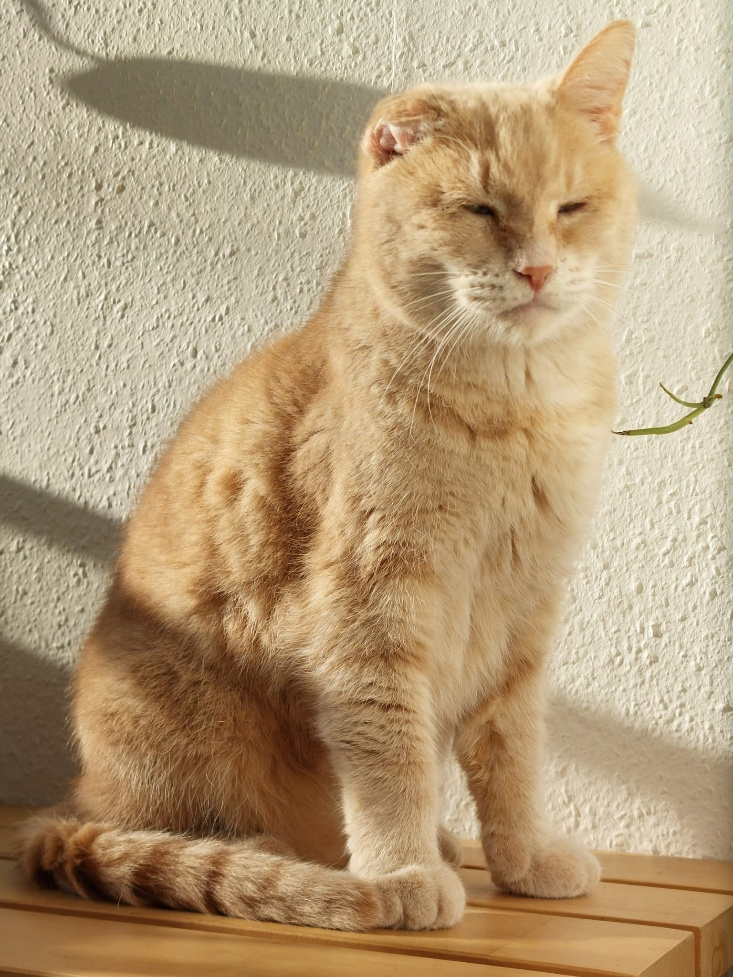

TITEL
Boos
Opa vond het dieet niet leuk. Hij wilde snoepjes en chips.
Jasmijn
Fit
Maar nu is hij niet meer Dikkiedik. Hij kan weer rennen zonder iedere 10 seconden een half uur uit te hijgen.

Jasmijn
Geen foto
Dit verhaaltje zal geen foto bevatten. Dit verhaaltje gaat mijn code daarom niet leuk vinden. Succes computer en succes ik.
Jasmijn
Langdradig
Hier begint het verhaal dat lang zal duren. Het gaat om een verhaal dat bestaat uit meer regels dan op één pagina past. De vraag is: gaat dit een probleem veroorzaken? Dames en heren, we gaan het meemaken. U zult als eerste getuige zijn van deze proef. Allereerst hebben
we meer regels nodig. Dus die klets ik nu bij elkaar. Het is nu nog niet duidelijk hoeveel regels er eigenlijk op één pagina passen. Dit hangt misschien ook af van de foto die toegevoegd is aan de tekst. En het formaat van deze foto. Misschien hangt het ook af
van het aantal enters in een verhaal. Dat gaan we nu bekijken. Misschien nemen enters te veel ruimte in beslag. Maar alfa’s houden van enters. Dus de tool moet hier wel mee kunnen werken.

Jasmijn en Jeroen
Opa de kat
Er was eens een kat genaamd Opa. Opa woonde in Almere. Maar niet voor lang meer. Hij ging wonen bij een nieuwe familie. Helemaal in Groningen.

Jasmijn
Dieet
In Almere mocht hij ALLES eten wat hij wilde. Hij was daarom nogal dik. Zijn nieuwe familie noemde hem Dikkiedik. Hij moest op dieet.

Jasmijn
Einde